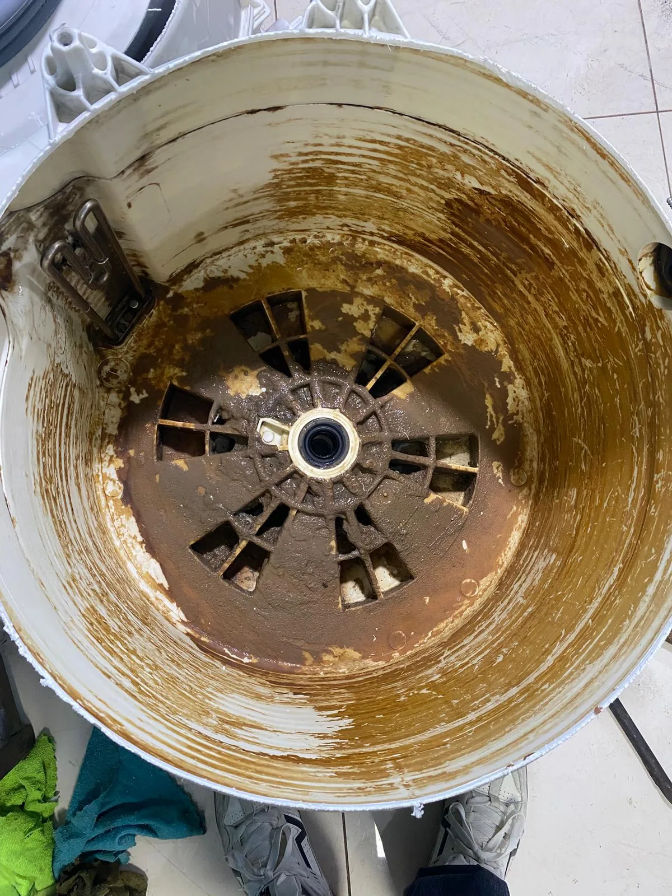
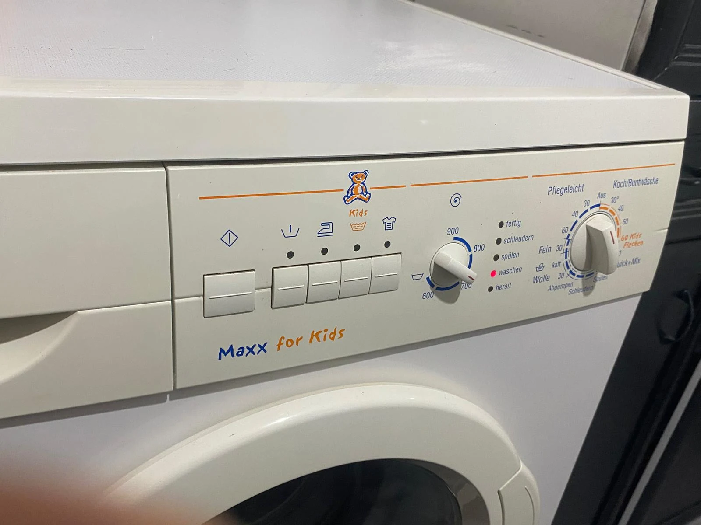
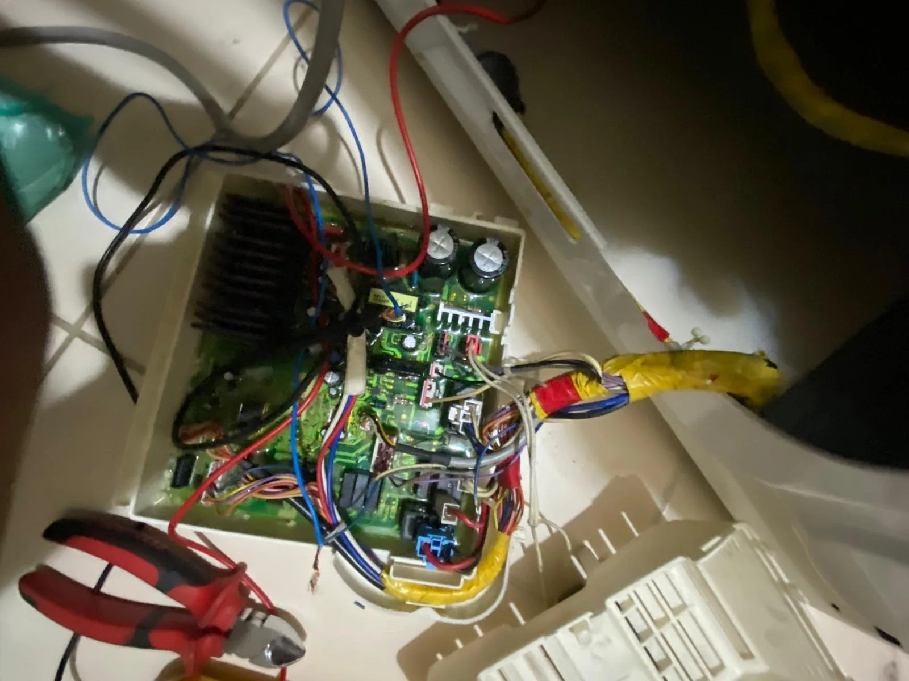
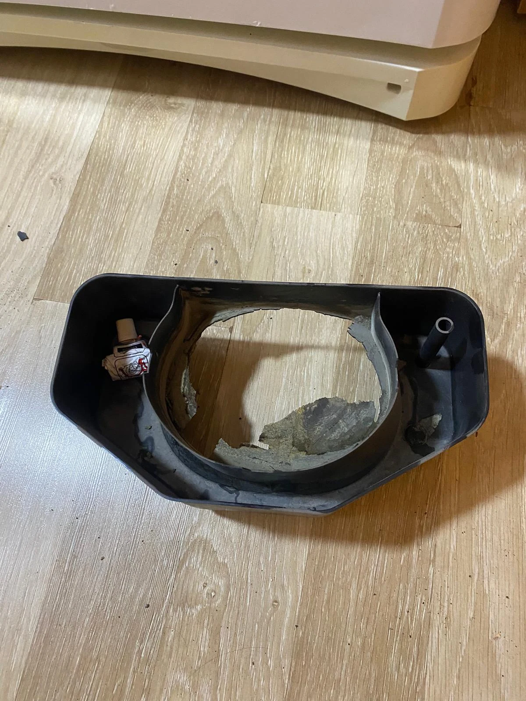
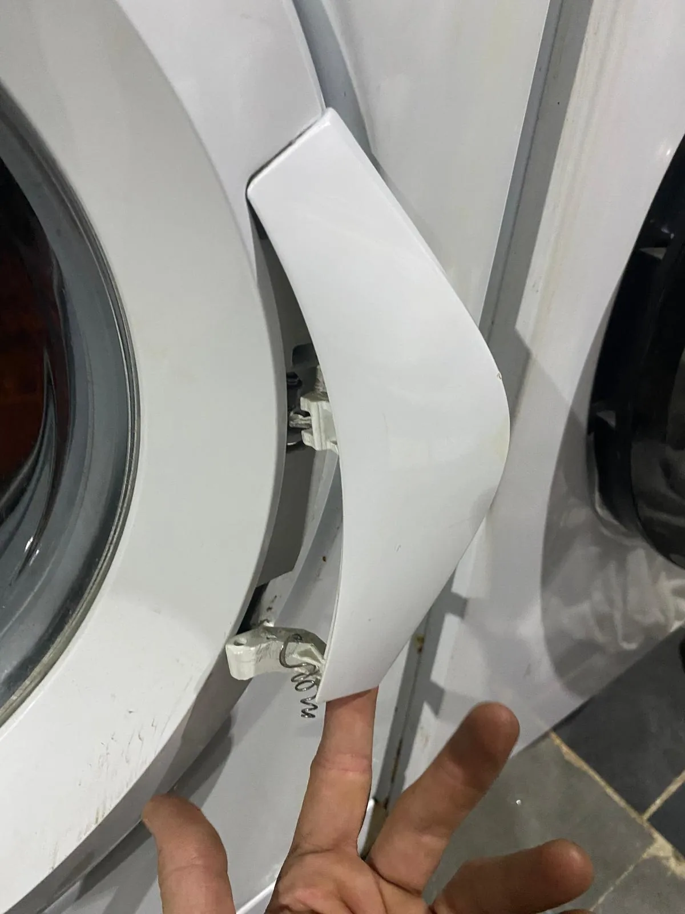
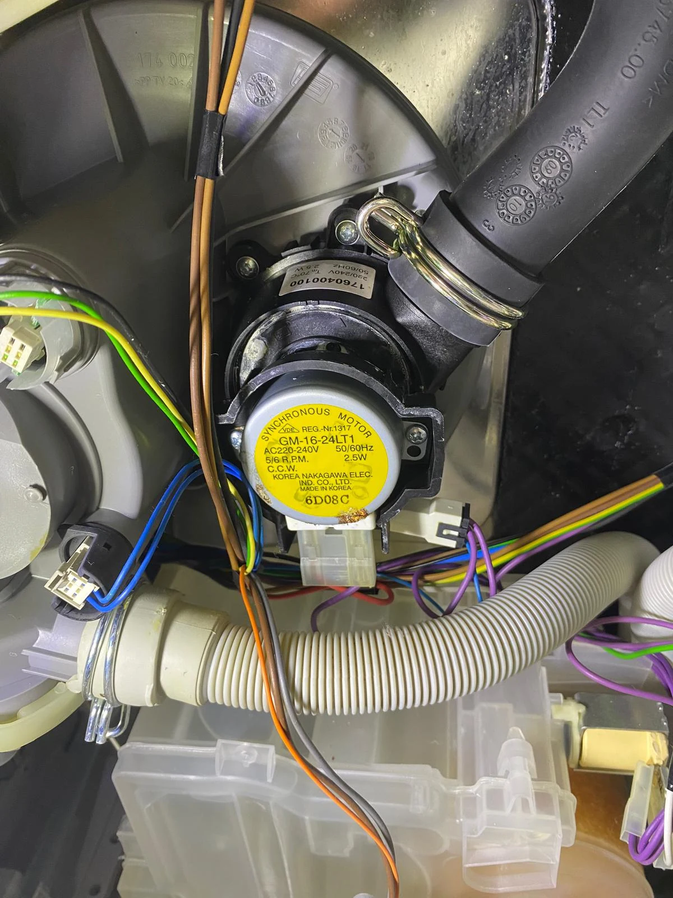

TEKNİK SERVİS
Buzdolabı Servisi
Soğutmama, aşırı ısınma, su akıtma, kompresör ve elektronik kart sorunları.
Detaylı Bilgi →Buzdolabı, çamaşır makinesi, bulaşık makinesi, kurutma makinesi, fırın, ocak, klima ve kombi arızalarında servis talebinizi kolayca oluşturun.
Arızanıza uygun hizmet sayfasından daha detaylı bilgi alabilir, doğrudan servis talebi oluşturabilirsiniz.

Soğutmama, aşırı ısınma, su akıtma, kompresör ve elektronik kart sorunları.
Detaylı Bilgi →
Dönmeme, sıkmama, kapak, kazan, rulman ve elektronik kart sorunları.
Detaylı Bilgi →
Su akıtma, yıkamama, pervane, deterjan ve elektronik kart sorunları.
Detaylı Bilgi →

Isıtma, termostat, rezistans, ateşleme ve panel sorunları.
Detaylı Bilgi →
Bakım, temizlik, performans kontrolü ve uygun arızalarda teknik destek.
Detaylı Bilgi →Isınma, sıcak su ve genel çalışma sorunlarında teknik destek talebi.
Detaylı Bilgi →
Soğutmama, buzlanma, ses ve elektronik sorunları.
Detaylı Bilgi →
Telefon veya WhatsApp üzerinden cihazınızı ve sorununuzu paylaşın.
Marka, model ve arıza belirtisini mümkün olduğunca net belirtin.
Uygunluk durumuna göre servis talebiniz değerlendirilir.
Yapılan işlem sonrasında temel çalışma kontrolleri gerçekleştirilir.
Google İşletme Profilimiz üzerinden müşterilerimizin güncel değerlendirmelerini inceleyebilir ve hizmet aldıysanız deneyiminizi paylaşabilirsiniz.
İşletme profilini aç →İlçe ve mahalle bazlı hizmet sayfalarımızı inceleyebilirsiniz.
Stok görseller yerine teknik servis süreçlerinden kendi çalışmalarımızı gösteriyoruz.


En sık sorulan soruların kısa cevaplarını burada bulabilirsiniz.
Arçelik, Bosch, Siemens, Profilo, Samsung, Altus ve farklı marka/model cihazlar için arıza bilgisi paylaşabilirsiniz.
Evet. Cihaz türünü, marka-modelini ve yaşadığınız sorunu WhatsApp üzerinden iletebilirsiniz.
Evet. Pendik ve çevresinde yaşayan yabancı müşteriler için English Support sunulmaktadır.
Pendik, Kurtköy ve yakın çevre için cihaz ve konum bilginizi paylaşarak uygunluk sorabilirsiniz.
Marka adları yalnızca cihaz ve hizmet kapsamını belirtmek amacıyla kullanılmaktadır. İşletme bağımsız teknik servis hizmeti sunmaktadır.
Telefonla veya WhatsApp üzerinden cihaz türünü ve yaşadığınız sorunu paylaşın.